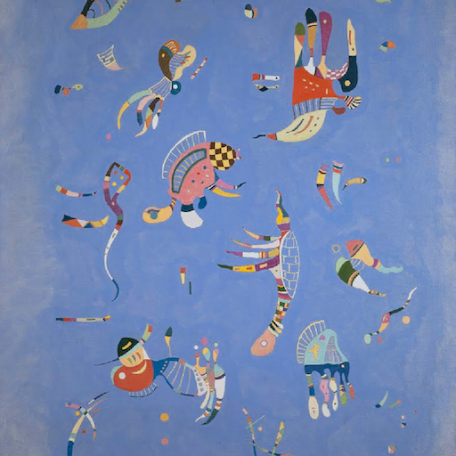

Text-based NeRF Optimization
Select a sample to view.
VSD
SDS
Ours
A pineapple, detailed, high resolution, high quality, sharp.
Painting-to-Real



Acknowledgment
We thank Matthew Tancik, Jiaming Song, Riley Peterlinz, Ayaan Haque, Ethan Weber, Konpat Preechakul, Ruiqi Gao, Amit Kohli and Ben Poole for their helpful feedback and discussion.
This project is supported in part by a Google Research Scholar award and IARPA DOI/IBC No. 140D0423C0035. The
views and conclusions contained herein are those of the authors and do not
represent the official policies or endorsements of these institutions.
BibTeX
@article{mcallister2024rethinking,
title={Rethinking Score Distillation as a Bridge Between Image Distributions},
author={},
journal={arXiv preprint arXiv:},
year={2024}
}